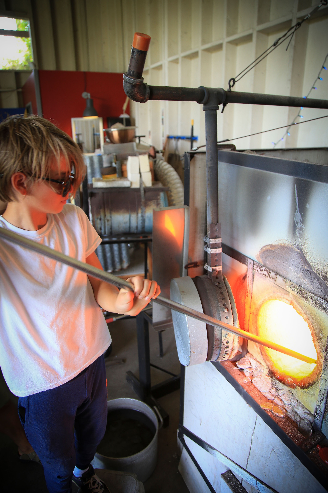

Ben Rasmussen is a 14 year old hard glass artist that started creating glass art when he 13 years old,
mentoring with Black Sand Glass owner Joel Corley and Milon Townsend.
(https://www.blacksandglass.com)
Ben is a creative young entrepreneur,
who has been selling his various creations since he was seven years old.
Ben now sells his glass art to rent torch time from Black Sands Glass and plans to save up enough money to build his own glass studio.
Ben is also accepting donations towards this cause so he may continue to offer unique and beautiful glass art.
Ben will be expanding his knowledge of glass art starting mid August as an apprectice to Daniel Moe of Moe Hot Glass. (https://www.moehotglass.com)
I am working on making a glassblowing studio.
I am also working on two websites.